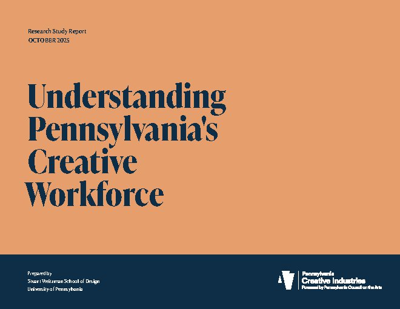
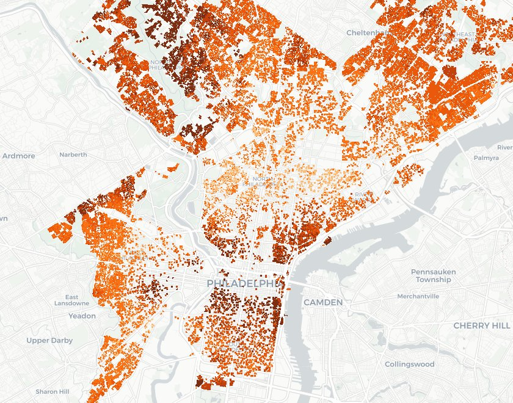
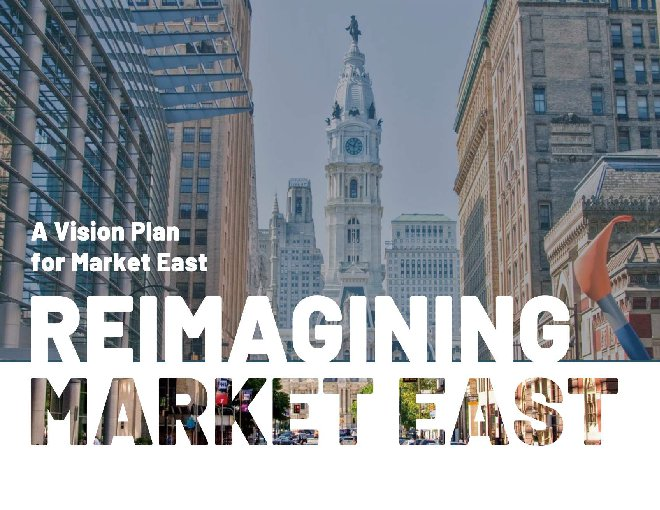
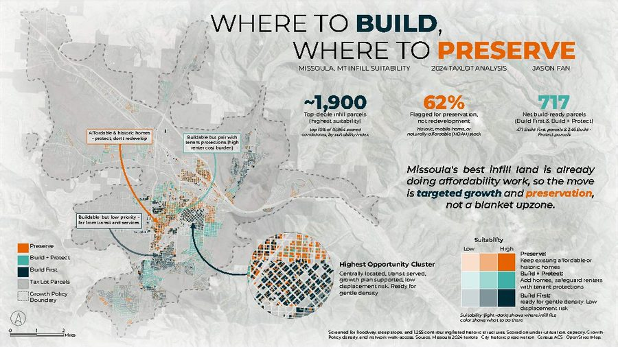
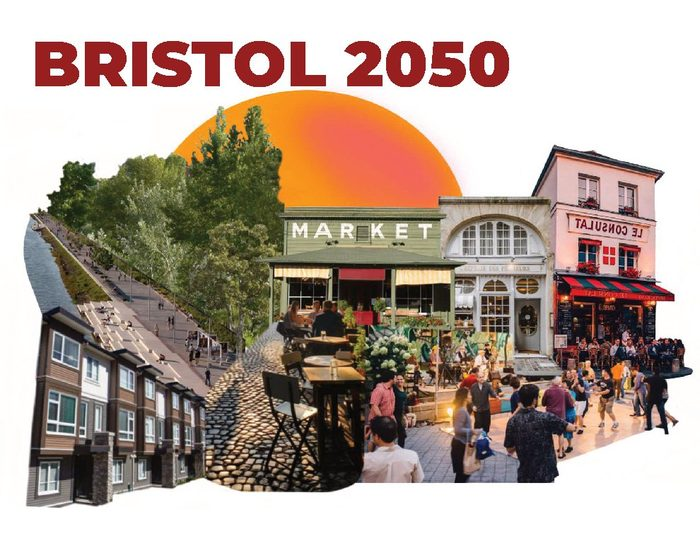
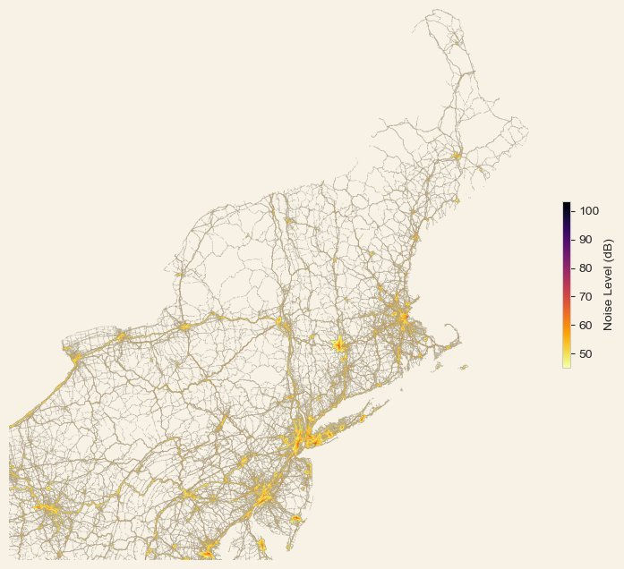
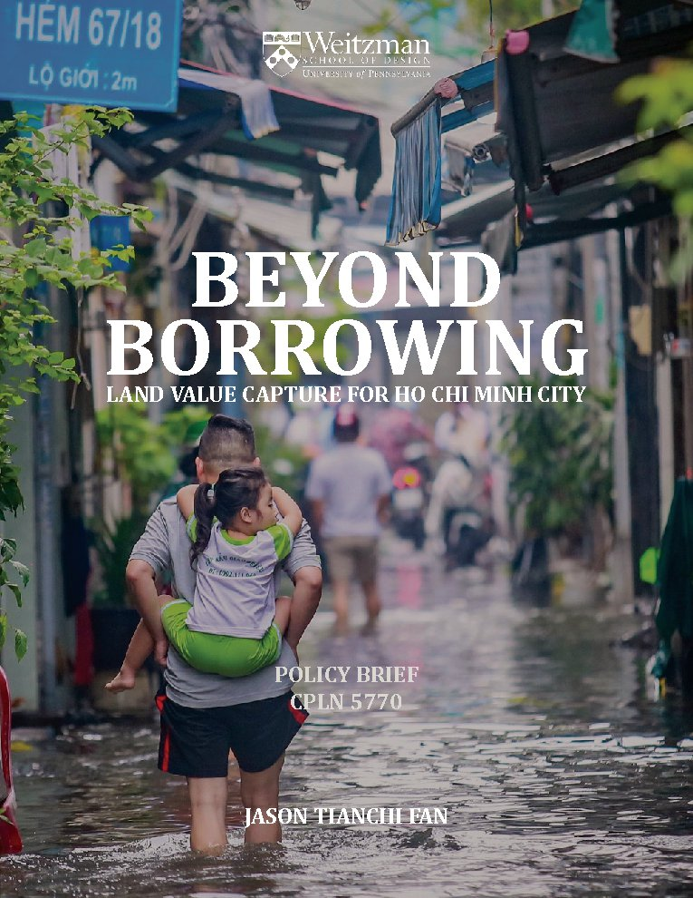
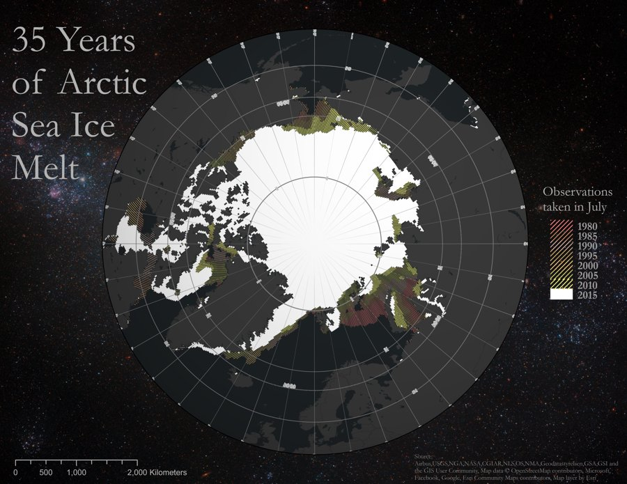
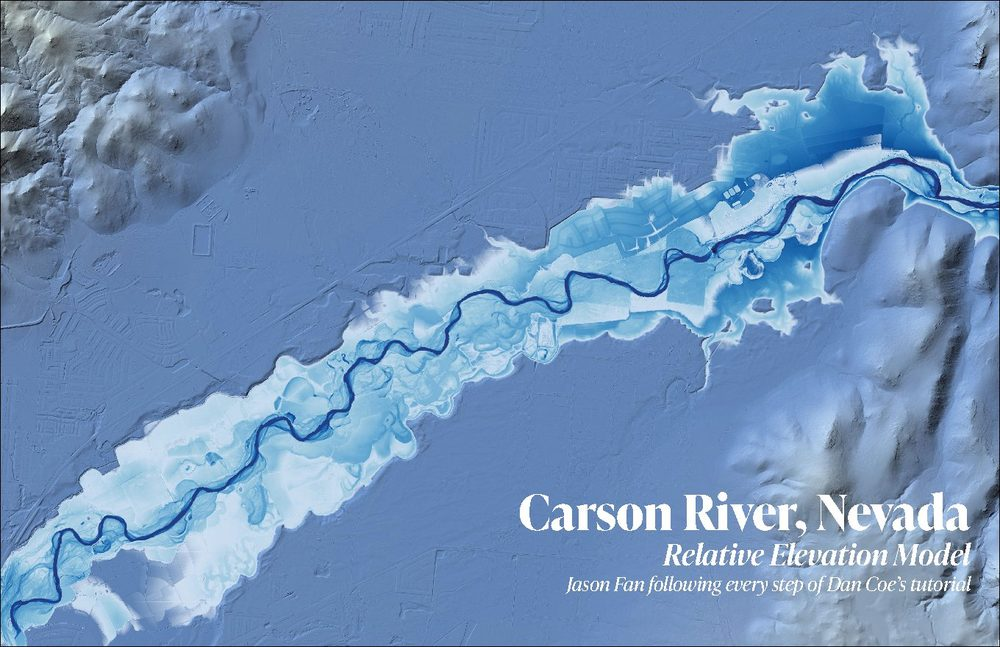

I am an urban planner and data analyst. I build reproducible pipelines over messy public data, then turn what comes out into maps, reports, and tools that people without a technical background can act on. Most of my work has been for city and state government.
That has meant R pipelines integrating microdata for 245,000 individuals in a report published by the Pennsylvania Council on the Arts, and a model scoring Philadelphia's 520,000 residential parcels for vacancy risk. On that one I checked flag rates across poverty quintiles before it shipped, because where a targeting tool sends inspectors is a policy question.









I graduated from Penn with my Master of City Planning in May 2026 and I am looking for full-time work in urban data, planning, and spatial analysis. I am glad to talk about project-based work too.